Планировщик еды
Приложение, помогающее составить список покупок и меню на день, неделю или месяц.
Проблема
В современно мире, когда мы постоянно спешим, часто не хватает времени на бытовые вещи. Из-за этого люди переходят на полуфабрикаты, питаются в кафе. Бывает и обратная ситуация, когда у человека есть время, но просто не получается наладить свою диету, не хватает знания рецептов или опыты. Планировщик еды поможет пользователю систематизировать рацион питания, начать экономить на продуктах, не покупать лишнего, подобрать быстрые и интересные рецепты в свой повседневный рацион.
Целевая аудитория
Приложение рассчитано на людей 25 — 35 лет, которые желают полностью распланировать свой день и свои потребности. Также возможными пользователями могут стать более молодые люди, которые только начинают жить отдельно, но не приготавливая еду сталкиваются с разными проблемами: ограниченность в знаниях рецептов, покупка, но не использование продуктов, что приводит к лишним затратам.
Решение
Что проект из себя представляет? Из каких частей состоит? Что конкретно будет сделано? Приложите эскизы/вайрвреймы/мокапы/референсы.
MealPlan и продукты на кухне
Создание планировщика еды должно помочь в регулировании потребляемой пищи. Составляя меню на неделю, можно решить одновременно несколько проблем: во первых, появляется возможность рассчитать сколько именно времени потратиться на приготовление еды, во-вторых, приолжение будет напоминать пользователю о его желаниях в изменении диеты, что поможет оградить от избыточного потребления того или иного продукта или наоборот, напомнит о том, что надо употребить. На регулировании диеты возможности не заканчивают. Часто из-за невозможности хранить в голове информации, какая еда есть дома, некоторые вещи портятся из-за избыточных покупок или забывания о том, что вообще есть. Приложение поможет хранить в своем профиле информацию о еде, специях, добавках, что хранятся у вас кухне. С помощью считывания QR кода с упаковки, с легкостью можно внести многие ингридиенты, либо можете заполнить еих вручную. Вручную также можно заполнять, когда какой-то ингридиент заканчился. Дополнительно к этому приложение самостоятельно будет вычитать те ингридиенты, что использовались в вашем меню.
Список покупок
Поход в магазин часто оказывается испытанием для молодых и занятых людей. Чтобы облегчить это занятия, придлжени предлагает после составления меню составить список покупок, который можно распечатать или перенести в заметки. Те продукты, что у вас есть можно «вычеркнуть» сразу, либо синхронизировать со списком продуктов в вашем профиле и они вычеркнуться самостоятельно. Таким образом можно сократить ваши походы в магазин до минимума. Для еще большего удобство можно заказать доставку еды по конкретным рецептам.
Риски
Составление базы данных с рецептами и ингридиентами займет достаточно долгий промежуток времени. Пользователя может отпугнуть и не удовлетворить небольшой выбор, а внесение продуктов и рецептов вручную окажется неудобным и затратит много времени. Сама по себе идея планирования своего рациона может оказаться недейственной для большинства пользователей, но для этого стоит расширить возможности приложения, чтобы дополнтельные разделы могли заинтересовать людей.
Команда
В проекте учавствует один человек. Чтобы осуществить все задуманные идеи надо стать экспертов в front-end и back-end разработке.